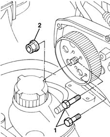
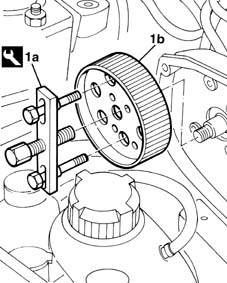

1060E30 pressure pump pulley - r r
- Path
- Procedures > 10 ENGINE UNIT > 1060 DIESEL FUEL INJECTION > 1060E diesel pressure pump > 1060E30 pressure pump pulley - r r
- Kind
- repair procedure (removal / refitting; the operation number is the code)
- Applies to
- engines: 1.9 JTD 8V; all production periods
- Interactive page
- https://sloeber94.github.io/elrnDB-fMltpl/en/#/2891398
Applies to: engines: 1.9 JTD 8V; all production periods
 Removing
Removing
 Refitting
Refitting4450B10 Front WHEEL (one) - R.R.
- 7055B64 Engine compartment DUST shield in front wheel arch (one), left or right - R.R.
1092G10 single engine belt r r
1092A12 crankshaft pulley - r+r for versions with air conditioner
1032D12 timing system protective cover(s) - r + r
1016A10 sound-proofing cover - r + r
1008C10 power unit upper reaction link r r
1008C14 engine link bracket - r r
1. Screw two bolts in the appropriate seats to stop the rotation of the pressure pump pulley.
2. Undo the nut securing the pulley.

Applies to: engines: 1.9 JTD 8V; all production periods
1. Fit extractor (1a) and remove pressure pump pulley (1b).
 | Name | Country |
|---|---|---|
1 | Extractor | 1.860.854.000 |

Applies to: engines: 1.9 JTD 8V; all production periods
Refitting
RemovingFit the pressure pump pulley.
Fit two bolts to lock the pulley in place.
Tighten the pressure pump pulley nut to torque.
 | Fastening | Component | Ø | Value (daNm) |
|---|---|---|---|---|
- | Bolt | PRESSURE PUMP CONTROL PULLEY | M14 | 4.2 - 5.2 |
1008C14 engine link bracket - r r
1008C10 power unit upper reaction link r r
1016A10 sound-proofing cover - r + r
1032D12 timing system protective cover(s) - r + r
1092A12 crankshaft pulley - r+r for versions with air conditioner
1092G10 single engine belt r r
- 7055B64 Engine compartment DUST shield in front wheel arch (one), left or right - R.R.
Topics linked from this page (8)
- 1008C10 power unit upper reaction link r r
- 1008C14 engine link bracket - r r
- 1016A10 sound-proofing cover - r + r
- 1032B14 toothed timing belt - r + r for timing adjustment or replacement versions with air conditioner
- 1032D12 timing system protective cover(s) - r + r
- 1092A12 crankshaft pulley - r+r for versions with air conditioner
- 1092G10 single engine belt r r
- 4450B10 Front WHEEL (one) - R.R.